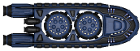

System View Help
Welcome to System View Help. The purpose of this page is to give you, the user, information about how to play this
part of the game. Let's get started.
What is this?
This is the System View. In this screen you can see everything that's going on in this particular star system. You
should see all the planets in the system, as well as the tunnels that connect this system to other systems. You can
also see the ships present in the system. Clicking on any of these elements will display detailed information in the
context bar (which you can see below).
OK - How do I play?
There are four main possible actions you will want to take from this screen:
- Use tunnels to travel to other systems
- Colonize a planet
- Start Combat (NFI)
- Adjust planet output
Tunnels
To open the tunnels and activate space travel hit the "Open Tunnels" button (to close, hit the button again). You
should see a visual indicator that the tunnels are open (animation). Then simply drag the ship you want to the
desired tunnel. You can find out which other system a tunnel connects to by clicking it.
Colonize
To colonize a planet you will need to toggle Colonize Mode to ON. At this point you should see a small
green circle around any available planets.
Then just drag your colonizer over to that planet.

Start Combat (Not Fully Implemented)
This will start combat with four enemy fighters. Combat results are not permanent.
Adjust Output
To adjust the output of a planet between
research and
production
select the planet and play with the slider. The more to the left, the more the planet will be focused on research.
To the right the planet will focus its output on production. Hit "Commit" to save the change.